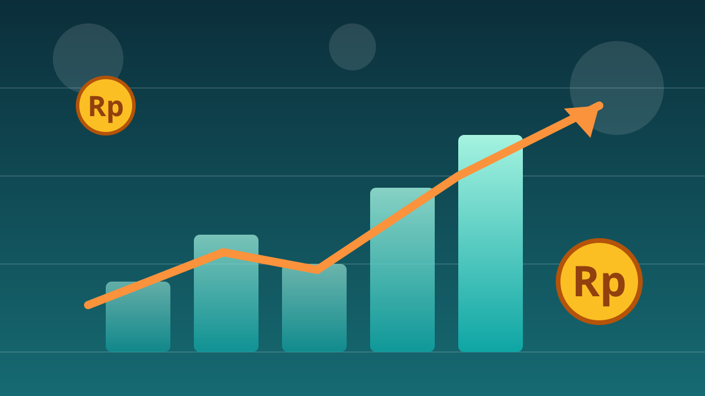

1 / 6

💰 EKONOMI
Selasa Pesta, Rabu Koreksi. Ada Apa di Bursa?
Indeks saham Indonesia lagi naik-turun kayak wahana — Selasa terbang 1,21%, Rabu langsung koreksi. Kenapa bisa gitu? Geser →
2 / 6
📈
Selasa: pesta hijau-hijau
Pada Selasa (6/10), IHSG ditutup menguat 74,06 poin atau 1,21% ke level 6.192,92. Ratusan saham berakhir di zona hijau.
Sektor transportasi, teknologi, dan energi jadi motor penguatan — reli yang cukup merata di semua sektor.
3 / 6
📉
Rabu: plot twist di tengah jalan
Rabu (7/10), IHSG dibuka menguat ke 6.210 dan sempat menyentuh 6.214 — tapi tak bertahan lama. Indeks berbalik melemah dan ditutup turun 0,75% (minus 46,2 poin) ke 6.146,72.
Penyebab utamanya: aksi ambil untung (profit taking) setelah reli sehari sebelumnya, plus tekanan jual dari investor asing.
4 / 6
🏦
Siapa pemberatnya?
Sektor energi jadi beban terberat dengan penurunan 1,57%. Saham Bayan Resources (BYAN) anjlok sekitar 7% ke Rp12.550 dan ikut menyeret indeks.
Sektor keuangan jadi satu-satunya yang masih bertahan di zona hijau — tipis, cuma 0,02%.
5 / 6
🔮
Terus hari ini gimana?
Analis Phintraco Sekuritas memproyeksikan IHSG berpotensi menguji level 6.200–6.230 pada perdagangan Kamis (8/10) ini.
Tapi ingat: itu proyeksi analis, bukan jaminan. Pasar bisa berubah kapan aja mengikuti sentimen global.
6 / 6
🤔
Efeknya ke lo apa?
Buat yang baru belajar saham atau reksadana: naik-turun harian kayak gini itu normal banget. Jangan FOMO beli pas lagi hijau, jangan panik jual pas lagi merah.
Pelajari dulu mekanismenya, mulai dari nominal kecil. Artikel ini bersifat informatif, bukan rekomendasi investasi. 💡